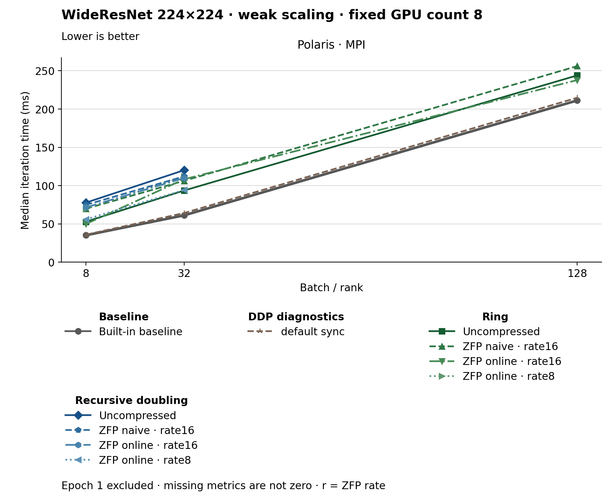

The figure uses lines. Methods use colors, line styles and markers. The metric is Median iteration time (ms). Polaris · MPI, Batch / rank 8: Built-in baseline has the lowest plotted value, 35.145. Polaris · MPI, Batch / rank 32: Built-in baseline has the lowest plotted value, 61.175. Polaris · MPI, Batch / rank 128: Built-in baseline has the lowest plotted value, 211.205. Epoch 1 is excluded. Values are medians; when repeated runs are available the selected repeat policy is median. These are not confidence intervals across repeated jobs. Missing or unrecorded metrics are omitted, not set to zero.
| Panel | Batch / rank | Method | Value | Runs |
|---|---|---|---|---|
| Polaris · MPI | 8 | none | 35.144999999999996 | 1 |
| Polaris · MPI | 8 | default_sync | 35.885000000000005 | 1 |
| Polaris · MPI | 8 | ring | 52.89 | 1 |
| Polaris · MPI | 8 | ring_zfp_naive:16 | 69.815 | 1 |
| Polaris · MPI | 8 | ring_zfp_online_coll:16 | 49.82 | 1 |
| Polaris · MPI | 8 | ring_zfp_online_coll:8 | 69.73 | 1 |
| Polaris · MPI | 8 | recursive_doubling | 77.75 | 1 |
| Polaris · MPI | 8 | recursive_doubling_zfp_naive:16 | 74.85499999999999 | 1 |
| Polaris · MPI | 8 | recursive_doubling_zfp_online_coll:16 | 71.53 | 1 |
| Polaris · MPI | 8 | recursive_doubling_zfp_online_coll:8 | 55.965 | 1 |
| Polaris · MPI | 32 | none | 61.175 | 1 |
| Polaris · MPI | 32 | default_sync | 64.21000000000001 | 1 |
| Polaris · MPI | 32 | ring | 93.61 | 1 |
| Polaris · MPI | 32 | ring_zfp_naive:16 | 106.275 | 1 |
| Polaris · MPI | 32 | ring_zfp_online_coll:16 | 108.37 | 1 |
| Polaris · MPI | 32 | ring_zfp_online_coll:8 | 112.02 | 1 |
| Polaris · MPI | 32 | recursive_doubling | 120.185 | 1 |
| Polaris · MPI | 32 | recursive_doubling_zfp_naive:16 | 112.06 | 1 |
| Polaris · MPI | 32 | recursive_doubling_zfp_online_coll:16 | 109.88 | 1 |
| Polaris · MPI | 32 | recursive_doubling_zfp_online_coll:8 | 94.255 | 1 |
| Polaris · MPI | 128 | none | 211.20499999999998 | 1 |
| Polaris · MPI | 128 | default_sync | 214.785 | 1 |
| Polaris · MPI | 128 | ring | 243.91500000000002 | 1 |
| Polaris · MPI | 128 | ring_zfp_naive:16 | 256.05499999999995 | 1 |
| Polaris · MPI | 128 | ring_zfp_online_coll:16 | 237.805 | 1 |